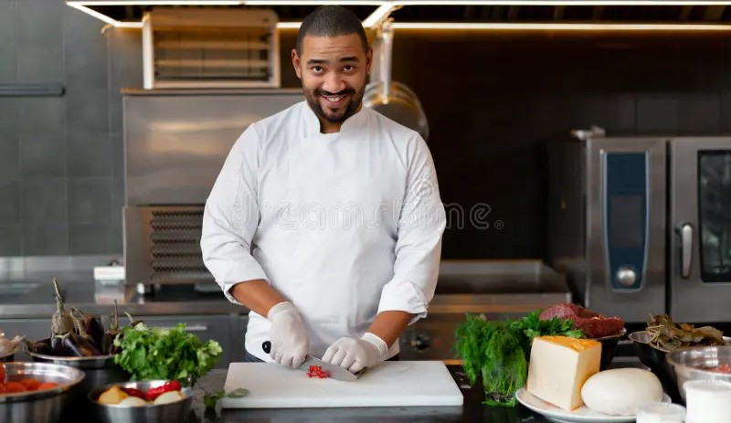

Aboubacar Sidik
Sous-ChefPassionné par la cuisine française, il maîtrise les techniques de cuisson avec 5 ans d'expérience.


GoûtAfricain, c'est avant tout une célébration des saveurs africaines. Nous proposons des plats authentiques, préparés avec des ingrédients frais et locaux, pour vous offrir une expérience culinaire unique.
Chaque repas est une invitation à découvrir la richesse gastronomique de notre continent. Merci de nous faire confiance et de partager cette aventure avec nous.
Des experts en cuisine africaine et internationale, passionnés par leur métier.
Des recettes venues du Sénégal, du Nigeria, du Maroc, de l'Éthiopie et bien plus.
Des produits frais et locaux, sélectionnés chaque jour pour leur qualité.
Des plats adaptés à vos envies, vos allergies et vos régimes alimentaires.
Notre salon privé et notre service traiteur pour vos plus beaux moments.
Des plats du jour et des menus de saison à découvrir régulièrement.

Passionné par la cuisine française, il maîtrise les techniques de cuisson avec 5 ans d'expérience.

Experte pâtissière, elle crée des desserts innovants qui émerveillent les convives.
Passionnée de gastronomie méditerranéenne, elle apporte des saveurs authentiques et une cuisine saine.

Formée en cuisine asiatique et française, elle supervise la cuisine avec attention et passion.
Pour toute demande ou assistance, notre équipe vous répond rapidement.
Contactez-nous